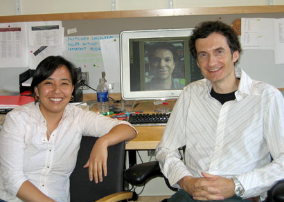

News Archives : 2007 : MicroRNAs and Nodal Signaling
by Alexander Schier
August 31, 2007
|  Authors Wen-Yee Choi, Antonio Giraldez (on screen), and Alex Schier |
MicroRNAs are small RNAs that bind to specific mRNAs and inhibit their translation. Hundreds of microRNAs are thought to repress thousands of target mRNAs, but it has been difficult to study the interaction between individual microRNA-mRNA pairs. Choi et al. developed a technology to block the interaction between microRNAs and their target sites in specific mRNAs. They found that antisense morpholino oligonucleotides complementary to microRNA binding sites protected mRNAs from microRNA-mediated repression. These target protectors allow the analysis of specific microRNA-mRNA pairs.
Applying this technology during zebrafish embryogenesis, Choi et al. found that the microRNA miR-430 inhibits squint and lefty, an antagonist and an antagonist of Nodal signaling, respectively. The level of activation of the Nodal pathway determines the amount of mesoderm and endoderm during vertebrate development. Loss of miR-430-induced repression led to an increase in Squint and Lefty and an imbalance of Nodal signaling, resulting in the reduction of endoderm.
The study establishes a novel regulatory mode for signaling pathways by microRNAs and introduces a technology to investigate specific microRNA-mRNA interactions. Target protectors might also serve as therapeutic agents. More than 30% of all human genes are thought to be microRNA targets. By blocking the interaction of specific microRNA-mRNA pairs, the translation and stability of particular mRNAs could be increased and result in the suppression of mutations that reduce gene expression. In addition, target protectors might be employed to upregulate beneficial gene products such as tumor suppressors or peptide hormones.